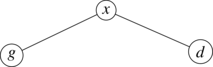
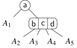
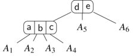
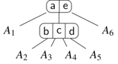
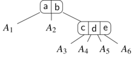
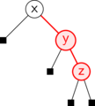
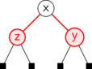
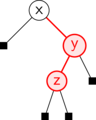

Arbres

1 Arbres binaires
1.1 Définition inductive
On adoptera une représentation graphique très naturelle pour les arbres binaires où un nœud \((g,x,d)\) sera représenté par 
1.2 Vocabulaire
- Initialisation Si \(a = \text{nil}\) la prémisse est fausse, donc l’implication est trivialement vérifiée.
- Hérédité Supposons la propriété vérifiée pour deux arbres \(g\) et \(d\), soit \(x \in \mathcal{E}\), on va montrer qu’elle est vérifiée pour \(a = (g,x,d)\). On a quatre cas pour le couple \((g,d)\) :
- Soit \(g \neq \text{nil}\) et \(d \neq \text{nil}\). Dans ce cas, par hypothèse \(h(g) = \max_{n \in N(g)} p_g(n)\) où \(p_g\) est la profondeur de \(n\) en tant que nœud de l’arbre \(g\). Or, mis à part la racine de \(a\), le chemin menant dans \(a\) au nœud \(n\) est dans \(g\). On a donc directement \(p_g(n) = p(n) - 1\). Ainsi \(h(g) = \max_{n \in N(g)} p(n) - 1\). De même, \(h(d) = max_{n \in N(d)} p(n) - 1\). On a \[h(a) = 1 + \max(h(g),h(d)) = \max(\max_{n\in N(g)} p(n), \max_{n \in \N(d)} p(n))\] Or, le seul nœud de \(a\) qui n’est ni dans \(g\) ni dans \(d\) est sa racine, qui est de profondeur nulle donc \(h(a) = \max_{n \in N(a)} p(n)\).
- Soit \(g = \text{nil}\) et \(d \neq \text{nil}\). Ainsi \(h(g) = -1\) et donc \(h(a) = 1 + h(d) = \max_{n \in N(d)} p(n)\) par l’analyse précédente. On conclut donc avec la propriété voulue.
- Soit \(g \neq \text{nil}\) et \(d = \text{nil}\). Cas symétrique du précédent.
- Soit \(g = d = \text{nil}\). Auquel cas, \(h(a) = 0\) qui est bien la profondeur de son unique nœud.
On a bien montré la propriété voulue par induction structurelle.
1.3 Implémentations
1.3.1 En OCaml
En OCaml, on traduit directement la définition inductive par un type récursif :
On pourra alors définir des fonctions récursives sur les arbres par induction structurelle à l’aide d’un filtrage.
1.3.2 En C
1.4 Arbres binaires stricts
Cela revient à dire que les seules les feuilles ont des fils vides. On peut donc omettre l’arbre vide et ne garder que les feuilles à la place.
- Initialisation Si \(a\) a \(0\) nœud interne, c’est une feuille et on a directement la relation.
- Hérédité Supposons que la propriété soit vraie pour des arbres \(g\) et \(d\), et soit \(a = (g,x,d)\) un arbre dont ce sont les fils. On note \(n_i(t)\) le nombre de nœuds internes et \(n_f(t)\) le nombre de feuilles de l’arbre \(t\). On a \(n_i(a) = 1 + n_i(g) + n_i(d)\) et \(n_f(a) = n_f(g) + n_f(d) = 2 + n_i(g) + n_i(d) = 1 + n_i(a)\). La propriété est démontrée pour \(a\).
Cela permet naturellement de considérer des arbres où les feuilles et les nœuds internes ont deux types différents d’étiquettes.
L’exemple classique d’un tel arbre est celui des expressions arithmétiques :
- les nœuds internes sont étiquetés par des opérateurs binaires
- les feuilles sont étiquetées par des nombres.
En OCaml, on peut ainsi représenter un tel arbre par le type récursif :
Et pour les expressions, on pourra ainsi définir un type pour les opérateurs et écrire :
L’évaluation de telles expressions est étudiée dans le TP si dessous.
1.5 Arbres binaires complets
On peut représenter un arbre complet dans un tableau niveau par niveau en partant de la racine.
Si on place les indices comme étiquettes on aura, par exemple :
Et on pourra donc le représenter par le tableau des étiquettes dans cet ordre d’énumération.
On remarque que :
- le nœud \(0\) est toujours la racine
- si on considère un nœud \(i\), son fils gauche est le nœud \(2 i + 1\) et son fils droit est le nœud \(2 i + 2\).
- le fils gauche de \(i+1\) est \(2 (i+1) + 1 = 2i + 3 > 2 i + 2\). On est bien directement après.
- le \(k\)ème nœud du niveau \(l\), en commençant à numéroter à \(0\), a pour indices \(\sum_{j=0}^{l-1} 2^j + k = 2^l - 1 + k\).
- si \(i > 0\), son père est le nœud \(\left\lfloor \frac{i-1}{2} \right\rfloor\).
On peut donc, avec cette représentation, manipuler assez simplement un arbre binaire à plat .
2 Arbres
2.1 Définition
On étend directement la définition inductive des arbres binaires au cas où les nœuds plus d’éléments.
On étend naturellement le vocabulaire des arbres binaires :
- le nœud de tête d’un arbre, en fin de compte sa valeur, est appelé sa racine
- les éléments de \(f\) sont appelés les fils du nœuds
- si \(f\) est vide, on dit que le nœud est une feuille, sinon, on dit que c’est un nœud interne.
- \(|f|\), le nombre d’éléments de \(f\), est appelé l’arité du nœud. Les feuilles sont donc les nœuds zéroaire.
- une suite finie d’arbres, ou plus généralement un ensemble d’arbres, est appelé une fôret.
Si on note \(T(\mathcal{E})\) l’ensemble des arbres étiquetés par \(\mathcal{E}\), on a \[ \forall x \in \mathcal{E}, \forall n \in \N, \forall a_1, \dots, a_n \in T(\mathcal{E}), (x, (a_1, \dots, a_n)) \in T(\mathcal{E}) \]
Attention contrairement à ce que peut laisser entendre la formule précédente, il est tout à fait possible que \(n = 0\) ce qui correspond à la suite finie vide et donc à une feuille. On perd ici la possibilité de représenter un arbre vide.
2.2 Implémentation
L’implémentation d’un arbre repose sur l’implémentation d’une suite finie. Celle-ci peut être faite par un tableau ou par une liste chaînée.
On retrouve alors des implementations différentes des arbres mais qui sont, au fond, très proches.
En OCaml, on pourra alors avoir les deux implémentations suivantes :
On va alors avoir des programmes à la présentation assez différente suivant le type choisi. Voici, par exemple, les deux implémentations du calcul de la taille d’un arbre.
Avec des listes et aucune fonction du module List, on écrit souvent une fonction récursive sur les arbres et une fonction récursive sur les forêts.
On peut aussi utiliser directement fold_left et map :
Avec l’autre représentation, on procédera avec un mélange de fonction récursive et de boucles. Cela n’est pas sans rappeler ce qui a été fait pour le backtracking.
2.3 Représentation par un arbre binaire
Pour des raisons d’efficacité ou de réutilisation de programmes existants, on peut vouloir représenter un arbre comme un arbre binaire.
On va définir une application : \(\text{bin} : T(\mathcal{E}) \rightarrow T_b(\mathcal{E} \cup \{ \star \})\) ainsi : \(\text{bin}(x, ()) = (\text{nil},x,\text{nil})\), \(\text{bin}(x, (a)) = (\text{bin}(a),x,\text{nil})\) et pour un nœud d’arité strictement plus grande que 1 :
où \(a'_i = \text{bin}(a_i)\). Les nœuds rouges sont des nœuds ayant une étiquette spéciale \(\star\) telle que \(\star \not \in \mathcal{E}\).
2.4 Applications
2.4.1 Arbres d’expressions
On a déjà vu l’utilisation des arbres binaires pour représenter des expressions arithmétiques avec des opérateurs unaires ou binaires. On généralise naturellement cela à des expressions dont les opérateurs sont d’arité quelconque.
C’est ainsi qu’on représente un programme en mémoire, on parle d’arbre syntaxique.
2.4.2 Arbres préfixes ou tries
Un arbre préfixe ou trie est un arbre permettant de représenter un ensemble de mots. On étiquette les arêtes par des caractères et les nœuds par un booléen indiquant si la suite des étiquettes qui mène de la racine à ce nœud est un mot.
Par exemple, le trie :
permet de représenter l’ensemble de mots : bar, barbe, art, ami, abri, abricot, abonne.
Afin de représenter un tel arbre, il est nécessaire d’avoir une étiquette sur les arêtes, le plus simple pour cela est de remplacer la liste des enfants par une liste de couples (étiquette, enfant) ainsi :
Les fonctions de manipulations de ce type de donnée sont étudiées dans le TP TODO.
3 Parcours
3.1 Parcours récursif d’un arbre binaire
On a déjà vu dans les paragraphes précédent ce qui constitue le cœur du parcours d’un arbre :
Cette fonction ne fait rien, mais elle va parcourir chacun des nœuds de l’arbre. Si on veut effectuer un traitement sur le nœud, on peut le faire à trois moments :
- Avant l’appel à
parcours g, on parle de traitement préfixe - Entre les deux appels, on parle de traitement infixe
- Après l’appel à
parcours g, on parle de traitement postfixe
On représente ici l’ordre dans lequel on va effectuer chacun de ces trois traitements selon le code couleur : rouge pour préfixe, bleu pour infixe et vert pour postfixe. On a également indiqué, pour les premiers traitements, l’ordre dans lequel ils sont effectués par des numéros.
Pour illustrer ces traitements, on peut rajouter trois arguments au parcours :
On peut, par exemple, définir les deux fonctions suivante :
On peut alors observer les nœuds affichés sur l’arbre précédent selon les traitements effectués :
parcours print idle idle a: abdejkvwcfg on suit uniquement les arêtes rougesparcours idle print idle a: dbejvkwafcg on suit uniquement les arêtes bleuesparcours idle idle print a: djvwkebfgca on suit uniquement les arêtes vertesparcours print print print a: abdddbejjjekvvvkwwwkeb… on suit toutes les arêtes
3.2 Parcours impératifs
3.2.1 Cadre général
On va condisérer une structure de donnée abstraite qui généralise les piles et les files et permettre de représenter un ensemble de tâches à traiter. Pour cela, on dispose d’un type paramétrique 'a t et de l’interface :
cree : unit -> 'a tcrée un ensemble de tâchesajoute : 'a t -> 'a -> unitajoute une nouvelle tâche à traiterretire : 'a t -> 'aretire une tâche de l’ensemble des tâches à traiterest_vide : 'a t -> boolrenvoie un booléen indiquant si l’ensemble de tâches est vide
On a ainsi vu deux possibles implémentations, qui sont elles-mêmes des structures abstraites mais un peu moins abstraites que celle-ci :
- les piles pour lesquelles on retire le dernier élément ajouté
- les files pour lesquelles on retire l’élément le plus anciennement ajouté
On écrire un parcours impératif générique :
3.2.2 Cas du parcours en profondeur
Dans le cas où on utilise une pile, on retrouve essentiellement le parcours récursif précédent avec quelques changements :
- on empile ici d’abord
gpuisd, donc on va à droite avant d’aller à gauche. Il suffit de permuter les deux ajouts pour retrouver l’ordre précédent - on effectue un unique traitement préfixe
- si on considère la pile d’appels récursifs du parcours récursif, on constate que le nombre de structure pile est majoré par la hauteur de l’arbre. Ici, on va potentiellement ajouter tous les nœuds sur la pile, donc, on a une complexité en espace en \(O(|a|)\) plutôt qu’en \(O(h(a))\).
On parle de parcours en profondeur ou depth-first search (DFS) en anglais.
3.2.3 Cas du parcours en largeur
Dans le cas où on utilise une file, on obtient un parcours appelé le parcours en largeur en breadth-first search (BFS) en anglais.
Dans ce parcours, on va visiter les nœuds niveau par niveau en partant de la racine jusqu’aux feuilles de plus grande profondeur.
Ce parcours est particulièrement intéressant quand on cherche une information avec la plus petite profondeur possible. Par exemple, dans le cas de la recherche d’une solution à un problème, on peut vouloir tester les petites solutions avant les plus grandes.
Pour des problèmes d’énumération, c’est également intéressant, car on va obtenir des éléments par ordre croissant de la longueur du chemin depuis la racine. Par exemple, pour les tries, on en déduit les mots par ordre croissant de longueur.
3.3 Parcours d’arbres
Pour des arbres, on va suivre les mêmes principes. La différence va se situer au niveau de l’implémentation car il faudra alors manipuler des listes ou des tableaux d’enfants.
Notons qu’on a déjà vu un tel problème quand on a résolu des problèmes par backtracking. En effet, avec le backtracking, on a un arbre implicite des positions partielles dont les enfants sont les mouvements possibles vers de nouvelles positions.
4 Arbres binaires de recherche
4.1 Objectif
On souhaite ici réaliser une structure efficace d’ensembles finis. Pour cela, on cherche à définir une structure immuable 'a ensemble muni de quatre opérations
ensemble_vide : 'a ensemblel’ensemble videajoute : 'a ensemble -> 'a -> 'a ensemblerajoute un élément à un ensemble et renvoie le nouvel ensemblesupprime : 'a ensemble -> 'a -> 'a ensembleretire un élément à un ensemble et renvoie le nouvel ensemblecontient : 'a ensemble -> 'a -> boolteste si l’ensemble contient un élémentcardinal : 'a ensemble -> intrenvoie le nombre d’éléments de l’ensemble
Notons qu’on pourra souvent relacher la contrainte naturelle des ensembles en permettant d’ajouter plusieurs fois un même élément.
Une implémentation possible de cette structure serait d’utiliser des listes ou des tableaux triés, on aurait alors des opérations en \(O(n)\) pour manipuler \(n\) éléments (\(O(log_2 n)\) en optimisant la recherche avec une recherche dichotomique).
Ici, on présente une implémentation rendant possible une complexité en \(O(log_2 n)\) pour chaque opération sous certaines hypothèses dont on montrera qu’elles peuvent être satisfaites dans un second temps.
4.2 Définition
Exemples d’abr :
4.3 Opérations
4.3.1 Minimum et maximum
On peut obtenir la valeur minimale et maximale d’un abr en effectuant un parcours le long de la branche la plus à gauche ou de la branche la plus à droite.
En effet, si l’arbre est \((g,x,d)\) : soit \(g\) est vide et \(x \le \min d\) est le minimum, soit \(g\) est non vide et on a alors \(\min g \le \max g \le x\) donc le minimum de \(g\) est celui de l’arbre.
On en déduit le programme suivant :
On remarque que pour parcourir cette branche, on est en \(O(h(a))\) où \(a\) est l’arbre considéré.
!susubsection(Test si un arbre est un abr) Pour tester si un arbre est bien un arbre binaire de recherche on doit connaitre la valeur maximum de l’arbre gauche et minimum de l’arbre droit et tester si l’étiquette de chaque nœud \(n\) vérifie \[\max _{\eta\in A_g}\limits e(\eta)\leq e(n)\leq \min _{\eta\in A_d}\limits e(\eta )\] On peut écrire une procédure qui indique si l’arbre est un arbre binaire de recherche et les valeurs maximum et minimum de l’arbre (puisqu’on doit les calculer…)
let rec abr_test a = match a with
| Nil -> failwith "Arbre vide"
| Noeud(Nil,n,Nil) -> (true, n, n)
| Noeud(Nil,n,d) -> let bd, md, Md = abr_test d in
(bd && n < md, min n md, max n Md)
| Noeud(g,n,Nil) -> let bg, mg, Mg = abr_test g in
(bg && n >= Mg, min n mg, max n Mg)
| Noeud(g,n,d) ->
let bg, mg, Mg = abr_test g in
let bd, md, Md = abr_test d in
(bg && n >= Mg && n < md, min n (min mg md), max n (max Mg Md))Ici on a fait le choix de ne rien associer à l’arbre vide et de le traiter en amont au niveau des nœuds. Cela permet de ne pas imposer de contraintes sur le type des étiquettes comme cela aurait été le cas en mettant des valeurs ad hoc dans le cas de l’arbre vide (typiquement \(\pm \infty\)).
On verra en exercice qu’une lecture infixe permet de conclure également.
4.3.2 Recherche d’un élément
Comme on leur nom l’indique, la recherche est adaptée à ce type d’arbres. Le modèle par adjonction s’applique et donc la hauteur moyenne d’un arbre binaire de recherche est un \(\bigcirc (\log_2(n))\).On peut construire la fonction de recherche:
4.3.3 Insertion d’un élément
Étant donné un arbre binaire de recherche \(a\) et une étiquette \(x\), on veut construire un nouvel arbre binaire de recherche contenant les étiquettes des nœuds de \(a\) et \(x\). Il n’y a bien sur pas unicité de la solution… Dans un arbre binaire de recherche, l’opération se décompose en une étape de recherche, qui renvoie des informations sur la place où doit être inséré le nouvel élément, suivie de l’adjonction proprement dite.
On compare \(x\) à la racine pour déterminer s’il faut l’ajouter dans le sous-arbre gauche ou le sous-arbre droit, et l’on rappelle la procédure récursivement. Le dernier appel récursif se fait sur un arbre vide et l’on crée alors à cette place le nœud d’étiquette \(x\). Le nouvel arbre est reconstruit de proche en proche depuis cette branche vers la racine, sans modifier les branches non explorées. Les anciens nœuds ne sont pas modifiés et l’ancien arbre reste donc disponible.
Construction par insertion successive de l’ABR pour les éléments 5, 9, 1, 20 , 4, 7 , 17 , 12 :
4.3.4 Suppression d’un élément
Le problème de la suppression d’un élément (ou plutôt de sa première occurrence) d’un arbre binaire de recherche est plus compliqué. On peut le décomposer en:
- Recherche de l’élément
- Suppression
- Recomposition de l’arbre
Le nœud à supprimer est la racine d’un sous-arbre de l’arbre binaire de recherche. Commençons par considérer le problème de la suppression de la racine \(z\) d’un arbre binaire de recherche.
- Si les deux branches issues de \(z\) sont vides, on supprime et c’est fini (cas (a) de la figure \(z=13\)).
- Si l’une des deux branches issues \(z\) est vide, on se contente de garder l’autre branche. On conserve ainsi un arbre binaire de recherche (cas (b) de la figure \(z=16\)).
- Si les deux branches sont non vides, soit \(y\) l’élément le plus à gauche du sous-arbre droit \(A_d\) de \(z\). On a \(y > z\) par la propriété des ABR.
Remarquons que \(y\) ne peut avoir de fils gauche car sinon il ne serait pas le plus à gauche de \(A_d\).
On peut donc le supprimer et le reporter en lieu et place de \(z\) : on obtient alors un nouvel arbre qui est un arbre binaire de recherche. En effet :
- La branche droite est un arbre binaire de recherche (on a supprimé un nœud sans fils gauche) et l’étiquette de la racine est, par construction, inférieure aux étiquettes des nœuds de cette branche.
- La branche gauche est un arbre binaire de recherche (on n’y a pas touché) et la nouvelle étiquette de la racine \(y\) est supérieure ou égale à \(z\) qui majorait les étiquettes des nœuds de la branche gauche.
(cas (c) de la figure \(z=5\) et \(y=6\)). La localisation de \(y\) est facile : c’est nécessairement l’élément le plus à gauche de \(A_d\).
Les trois cas de suppression :
On en déduit le programme suivant :
let rec supprime a x =
match a with
| Nil -> Nil
| Noeud(g, y, d) when y < x ->
Noeud(g, y, supprime d x)
| Noeud(g, y, d) when y > x ->
Noeud(supprime g x, y, d)
(* à partir d'ici l'etiquette est forcement x *)
| Noeud(Nil, _, Nil) -> Nil
| Noeud(Nil, _, d) -> d
| Noeud(g, _, Nil) -> g
| Noeud(g, x, d) ->
let y = minimum d in
Noeud(g, y, supprime d y)4.4 Équilibrage
4.4.1 Principe et approche naïve
Les opérations précédentes sont toutes en \(O(h(a))\), or on sait que \(h(a) \le |a| \le 2^{h(a)} - 1\) donc \(\log_2 (|a| + 1) \le h(a) \le |a|\). On aimerait se rapprocher au plus de \(\log_2 |a|\) et pour cela, il faut que l’arbre soit le plus proche possible d’un arbre parfait. On parle alors d’équilibrage.
Une approche naïve consiste à extraire les valeurs dans l’ordre croissant à l’aide d’un parcours infixe puis à reconstruire un arbre équilibré par dichotomie : on place la valeur médiane à la racine et on construit récursivement les sous-arbres gauche et droite.
4.4.2 Arbres 2-3
Un nœud ternaire contient donc un fils central dont les valeurs sont comprises entre ses deux étiquettes.
Voici un exemple d’arbre 2-3 :

Recherche
Pour rechercher un élément \(x\) on adapte l’algorithme des ABRs :
- pour un noeud binaire \(N(g,y,d)\)
- si \(x < y\) on cherche dans \(g\);
- si \(x = y\) on a trouvé le nœud voulu;
- si \(x > y\) on cherche dans \(d\).
- pour un noeud ternaire \(M(g,y,m,z,d)\)
- si \(x < y\) on cherche dans \(g\);
- si \(x = y\) ou \(x = z\) on a trouvé le nœud voulu;
- si \(z > x > y\) on cherche dans \(m\);
- si \(z < x\) on cherche dans \(d\).
La complexité de cet algorithme est donc encore en \(O(h)\) où \(h\) est la hauteur de l’arbre. En tenant compte de la remarque précédente, elle est en \(O(\log n)\).
Insertion
Pour insérer un élément \(x\) dans un arbre 2-3, on va temporairement enrichir sa structure par des nœuds quaternaires satisfaisant les même requêtes sur les clés que les nœuds binaires et ternaires.
Pour insérer on effectue alors une recherche qui nous amène au dernier nœud avant les feuilles. On transforme alors ce nœud en augmentant son arité et en plaçant \(x\) à la bonne position par rapport aux étiquettes qu’il contient.
Exemples : * 1 dans
donne
- 8 dans
donne
Maintenant on va supprimer les nœuds quaternaires en les faisant remonter, au pire, jusqu’à la racine pour laquelle on peut faire l’opération suivante :
\(\rightarrow\)
Voici tous les cas de transformations selon le type du père et la position du nœud quaternaire : * fils gauche d’un binaire :
\(\rightarrow\)
- fils droit d’un binaire : 
\(\rightarrow\)
- fils gauche d’un ternaire : 
\(\rightarrow\)
- fils central d’un ternaire : 
\(\rightarrow\)
- fils droit d’un ternaire : 
\(\rightarrow\)
On observe rapidement que toutes ces transformations préservent la position des sous-arbres vis-à-vis des étiquettes des nœuds. Ainsi, au final on aura obtenu un arbre 2-3.
Remarque sur l’implémentation
Les arbres 2-3 sont simples à comprendre mais complexes à programmer :
- beaucoup de cas à traiter, notamment en fonction des parents ;
- des nœuds intermédiaires 2-3-4 qui demandent d’avoir un type de travail et un type final.
On va voir dans un dernier temps des arbres quasiment équivalent à ceux-ci mais bien plus simples à programmer.
4.4.3 Arbres rouges et noirs
On va transformer un arbre 2-3 en ABR en transformant les nœuds ternaires ainsi :
\(\rightarrow\)
Afin de se souvenir que le nœud \(a\) provient de cette séparation, on le marque en rouge. Ici on a également marqué l’arête gauche en rouge mais on l’omettra dans la suite.
Quelles remarques :
- la racine est noire et les feuilles sont noires ;
- le fils gauche d’un nœud est toujours noir ;
- il ne peut exister d’arêtes liant deux nœuds rouges car par construction les nœuds rouges sont toujours entourés de nœuds noirs ;
- les chemins d’une feuille à la racine dans l’arbre 2-3 sont tous de même taille, à chacun des nœuds de l’arbre 2-3 correspond un nœud noir, on en déduit donc que tous les chemins de la racine aux feuilles contiennent le même nombre de nœud noirs.
Réciproquement un arbre ABR dont les nœuds peuvent avoir ces deux couleurs et qui vérifie ces propriétés est appelé un arbre rouge et noir.
En fait, on a une bijection entre les arbres 2-3 et les arbres rouges et noirs ainsi définis.
La proposition suivante permet de voir que les arbres rouges et noirs sont de bons ABRs :
Pour l’insertion d’un nœud, on va déstabiliser la coloration en mettant trop de nœuds rouges, puis on va rétablir les contraintes en remontant vers la racine. Cela rappelle l’élimination des nœuds quartenaires des arbres 2-3. Mettre des nœuds rouges à l’avantage de préserver l’equilibrage noir.
Pour rétablir les couleurs, on va alors utiliser une succession de deux opérations élémentaires : les rotations et la bascule.
Rotations
On définit les deux rotations gauche et droite, duales l’une de l’autre, ainsi :
Ici, on a utilisé la couleur bleue pour représenter la couleur du nœud de départ qui peut être soit rouge soit noire mais va être préservée.
Les rotations permettent donc de faire pencher des nœuds rouges à droite ou à gauche.
On remarque que la hauteur en nœuds noirs de l’arbre n’a pas changé.
On peut passer d’une des trois représentations convenables des nœuds quaternaires à une autre à l’aide de rotations :
Bascule
Une autre opération importante dans les arbres rouges et noirs est le bascule qui permet de faire remonter les défauts de coloration vers la racine tout en préservant l’équilibre en nœuds noirs :
Si on effectue une bascule directement sur la racine de l’arbre consideré, on finit par la noircir ce qui augmente de un la profondeur noire de chaque feuille mais ne change pas l’équilibrage global.
Insertion
Selon les remarque précédente, on ne va pas hésiter à perdre la propriété des arbres rouges et noirs temporairement. De toutes les propriétés de ces arbres, c’est surement le fait qu’ils soient parfaitement équilibrés en nœuds noirs qui est le plus dur à assurer. On ne va donc pas toucher à cette propriété : on va insérer des nœuds rouges sous une feuille.
En faisant cela on risque d’avoir deux types de problèmes :
- des arêtes rouge-rouge ;
- des fils gauches rouges.
On va alors traiter les différents cas d’insertion et voir comment on peut les ajuster pour obtenir des arbres rouges et noirs.
Insertion dans un nœud issu d’un nœud binaire
Un nœud noir issu d’un nœud binaire a nécessairement ses deux fils qui sont vides ou non vides simultanément, car ils proviennent directement de la structure parfaitement équilibré des arbres 2-3.
On a alors les deux cas suivants d’insertion :
Dans les deux cas on se ramène à un nœud ternaire directement.
Insertion dans un nœud issu d’un nœud ternaire
On a trois cas d’insertions selon la position de la nouvelle valeur par rapport aux nœuds deux valeurs du nœud ternaire.
Supposons que l’on insère \(z\) dans l’arbre :

Si \(x \le y \le z\) :
Si \(z \le x \le y\) :
Si \(x \le z \le y\) :

Ici, on ne peut pas rétablir tout de suite la structure mais on peut faire remonter le problème jusqu’à la racine, quitte à faire une bascule finale qui va la noircir. On va donc partir d’un des trois problèmes précédents mais supposer qu’il se situe sur un nœud quelconque avec des sous-arbres rouges et noirs \(t_1, t_2, t_3\) et \(t_4\).
On remarque qu’on effectue essentiellement les mêmes opérations, et quitte à les inhiber quand on ne peut pas les appliquer, on peut se dire que pour insérer \(z\) dans l’arbre \(a\), on le rajoute récursivement à gauche ou à droite, on obtient ainsi \(a'\) et on effectue alors
\[ (\text{bascule}^? \circ \text{rot\_gauche}^? \circ \text{rot\_droite}^?)(a') \]
où ici, \(\text{op}^?\) signifie qu’on effectue l’opération uniquement si elle s’applique :
- pour une rotation droite, il faut que le fils gauche soit rouge et le fils droit noir, pour ne pas tomber dans le cas d’une bascule
- pour une rotation gauche, il faut que le fils droit et le fils droit du fils droit soient rouges
- pour une bascule, que les deux fils soient rouges
Implémentation
On commence par définir le type des arbres rouges et noirs :
type couleur = R | N
type 'a arn = Nil | Noeud of couleur * 'a arn * 'a * 'a arnERROR: src/structuresdonnees/../../snippets/structures/arn.py does not existOn définit ensuite des fonctions qui nous seront utiles vue la remarque précédente pour tester les couleurs à gauche et à droite :
let gauche a = match a with
| Nil -> failwith "Invalide"
| Noeud(_,g,_,_) -> g
let droite a = match a with
| Nil -> failwith "Invalide"
| Noeud(_,_,_,d) -> d
let couleur a = match a with
| Nil -> N
| Noeud(c,_,_,_) -> c
let rouge a = couleur a = R
let noir a = not (rouge a)ERROR: src/structuresdonnees/../../snippets/structures/arn.py does not existOn implémente alors les rotations et la bascule avec le filtrage.
let rotation_gauche a = match a with
| Noeud(c,t1,x,Noeud(R,t2,y,t3)) ->
Noeud(c,Noeud(R,t1,x,t2),y,t3)
| _ -> failwith "Invalide"
let rotation_droite a = match a with
| Noeud(c,Noeud(R,t1,x,t2),y,t3)
-> Noeud(c,t1,x,Noeud(R,t2,y,t3))
| _ -> failwith "Invalide"
let bascule a = match a with
| Noeud(N,Noeud(R,t1,x,t2),y,Noeud(R,t3,z,t4))
-> Noeud(R,Noeud(N,t1,x,t2),y,Noeud(N,t3,z,t4))
| _ -> failwith "Invalide"
let noircit a = match a with
| Noeud(_,g,x,d) -> Noeud(N,g,x,d)
| Nil -> NilERROR: src/structuresdonnees/../../snippets/structures/arn.py does not existPuis, les versions optionnelles qui ne s’effectuent que si c’est nécessaire :
let essai_rotgauche a =
if rouge (droite a) && rouge (droite (droite a))
then rotation_gauche a else a
let essai_rotdroite a =
if rouge (gauche a) && noir (droite a)
then rotation_droite a else a
let essai_bascule a =
if rouge (gauche a) && rouge (droite a)
then bascule a else aERROR: src/structuresdonnees/../../snippets/structures/arn.py does not existOn peut alors réaliser l’insertion récursivement :
let insere a x =
let rec aux a =
match a with
| Nil -> Noeud(R,Nil,x,Nil)
| Noeud(c,g,y,d) ->
let a' =
if x < y
then Noeud(c,aux g,y,d)
else Noeud(c,g,y,aux d)
in
essai_bascule
(essai_rotgauche
(essai_rotdroite a'))
in noircit (aux a)ERROR: src/structuresdonnees/../../snippets/structures/arn.py does not exist4.5 Implémentation d’un dictionnaire
5 Tas
5.1 Présentation
5.2 Implémentation
5.3 Application aux files de priorité
6 TP
6.1 Arbres en OCaml
6.1.1 Premières fonctions
On va considérer le type des arbres binaires 'a arbre défini par :
let rec sous_arbres a = match a with
| Nil -> []
| Noeud(g, x, d) ->
a :: (sous_arbres g @ sous_arbres d)
let rec noeuds a = match a with
| Nil -> []
| Noeud(g, x, d) ->
x :: (noeuds g @ noeuds d)
let rec feuilles a = match a with
| Nil -> []
| Noeud(g, x, d) ->
if feuille a then [x]
else feuilles g @ feuilles d
let rec noeuds_internes a = match a with
| Nil -> []
| Noeud(Nil, _, Nil) -> []
| Noeud(g, x, d) ->
x :: (noeuds_internes g @ noeuds_internes d)Pour accéder à un nœud de l’arbre, on descend en partant de la racine et en allant à gauche ou à droite. On peut donc représenter un tel chemin par une liste de déplacements :
6.1.2 Parcours
Sur le même modèle que l’exploration par backtracking, on va réaliser un parcours en profondeur d’un arbre en explorant à gauche puis à droite ses sous-arbres de manière récursives. Chaque nœud est donc vu trois fois :
- une première fois quand on le découvre avant d’explorer son sous-arbre gauche
- entre les deux explorations
- enfin quand on a fini d’explorer son sous-arbre droit.
let rec affiche_avant a = match a with
| Nil -> ()
| Noeud(g,x,d) ->
print_string x;
affiche_avant g;
affiche_avant d
let rec affiche_milieu a = match a with
| Nil -> ()
| Noeud(g,x,d) ->
affiche_milieu g;
print_string x;
affiche_milieu d
let rec affiche_apres a = match a with
| Nil -> ()
| Noeud(g,x,d) ->
affiche_apres g;
affiche_apres d;
print_string xL’appel à affiche_avant sur l’expression \((2+3)\times 4\) va afficher *+234.
L’appel à affiche_milieu sur l’expression \((2+3)\times 4\) va afficher 2+3*4.
L’appel à affiche_apres sur l’expression \((2+3)\times 4\) va afficher 23+4*.
On retrouve ainsi les notions préfixes, infixes et postfixes d’une expression arithmétique.
On redonne ici l’implémentation d’une pile et d’une file en OCaml :
let pile_creer () = ref []
let pile_empile p x = p := x :: !p
let pile_depile p =
match !p with
| [] -> failwith "Pile vide"
| x::q -> p := q; x
let pile_est_vide p = !p = []
let file_creer () = (pile_creer (), pile_creer ())
let file_bascule (pin, pout) = pout := List.rev !pin; pin := []
let file_enfile (pin, pout) x = pile_empile pin x
let file_defile (pin, pout) =
if pile_est_vide pout
then file_bascule (pin, pout);
pile_depile pout
let file_est_vide (pin, pout) = pile_est_vide pin && pile_est_vide poutCes deux structures de données ont la même interface mais deux comportements différents. On va utiliser un unique type pour les représenter afin de permettre à une fonction d’utiliser soit une pile soit une file.
type ('a, 'b) taches = {
creation : unit -> 'a;
ajouter : 'a -> 'b -> unit;
retirer : 'a -> 'b;
est_vide : 'a -> bool
}
let taches_pile = {
creation = pile_creer;
ajouter = pile_empile;
retirer = pile_depile;
est_vide = pile_est_vide
}
let taches_file = {
creation = file_creer;
ajouter = file_enfile;
retirer = file_defile;
est_vide = file_est_vide
}On pourra alors écrire une fonction prenant un gestionnaire de tâches en paramètre :
Ainsi f taches_pile [|1;2;3|] va afficher 321 et f taches_file [|1;2;3|] va afficher 123.
6.1.3 Arbres binaires stricts
Pour représenter des arbres dont les nœuds ont tous deux fils non vides, on va utiliser le type
Ce type permet de représenter naturellement des expressions arithmétiques comme :
Si on considère le type
On peut passer d’un ('a, 'b) arbre_bin à un ('a, 'b) etiquette arbre et, dans certains cas, d’un ('a, 'b) etiquette arbre à un ('a, 'b) arbre_bin.
let rec arbre_bin_vers_arbre a =
match a with
| Feuille n -> Noeud(Nil, F n, Nil)
| NoeudI(g, x, d) -> Noeud(arbre_bin_vers_arbre g,
N x,
arbre_bin_vers_arbre d)
let rec arbre_vers_arbre_bin a =
match a with
| Noeud(Nil, F f, Nil) -> Feuille f
| Noeud(g, N x, d) -> begin
match arbre_vers_arbre_bin g, arbre_vers_arbre_bin d with
| Some g', Some d' -> NoeudI(g', x, d')
| _ -> None
end
| _ -> None6.1.4 Dessin d’arbres
On va réaliser dans cette partie une fonction de dessin d’arbres avec graphics. L’idée est de placer la racine et de dessiner les sous-arbres gauche et droit en dessous. Pour cela, il va falloir connaitre la taille de ces sous-arbres en pixels.
On pourra consulter la documentation de graphics ici : Graphics
let rec dessine a x y =
match a with
| Nil -> ()
| Noeud(g, e, d) ->
(* On précalcule les tailles des sous-arbres *)
let lg, rg = pixels g in
let _, rd = pixels d in
(* position de la racine gauche relativement à (x,y) *)
let v_rg = x - lg - marge - rnoeud + rg in
(* position de la racine droite relative (x, y) *)
let v_rd = x + marge + rnoeud + rd in
let dec_y = y - 2 * rnoeud - marge in
moveto x y; lineto v_rg dec_y;
moveto x y; lineto v_rd dec_y;
fill_circle x y rnoeud;
moveto (x-tw/2) (y-th/2);
set_color white;
draw_string e;
set_color black;
dessine g v_rg dec_y;
dessine d v_rd dec_y6.1.5 Génération aléatoire d’arbres
Dans cette partie, ce qui nous intéresse est de générer aléatoirement des arbres pour en observer la structure. Les étiquettes ne sont pas pertinentes, on pourra donc au choix, soit considérer des unit arbre, soit redéfinir un type d’arbre non étiquettés.
On va réaliser ici deux modèles de génération aléatoire d’arbres. Le premier modèle consiste, pour générer un arbre de \(n\) nœuds, à choisir aléatoirement \(k\) dans \(\range{0}{n}\), à générer aléatoirement un arbre \(g\) à \(k\) nœuds et un arbre \(d\) à \(n-k\) nœuds puis à renvoyer l’arbre Noeud(g, (), d).
Pour le deuxième modèle, on va choisir un sous-arbre vide uniformément et le remplacer par un nœud.
6.2 Arbres non binaires, tries
6.2.1 Arbres non binaires
On va considérer ici les arbres d’arité quelconque avec des listes d’enfants pour les nœuds.
Afin d’effectuer des tests, on pourra considérer l’arbre suivant :
let t = { etiquette = 1;
enfants = [
{ etiquette = 2; enfants = [
{ etiquette = 5; enfants = [] }
] };
{ etiquette = 3; enfants = [
{ etiquette = 6; enfants = [
{ etiquette = 10 ; enfants = []}
]};
{ etiquette = 7; enfants = []}
] };
{ etiquette = 4; enfants = [
{ etiquette = 8; enfants = []};
{ etiquette = 9; enfants = []}
] }
] }qui correspond à la représentation :
Comme présenté dans ce chapitre, on peut réaliser des fonctions mutuellement récursives pour travailler avec ces arbres et sur la forêt induite par les enfants d’un nœud :
6.2.2 Représentation par des arbres binaires
On va maintenant revenir ici sur la représentation d’un 'a arbre en tant qu’arbre binaire. Pour cela, on va avoir besoin d’étiquettes factices pour les nouveaux nœuds qui ne servent qu’à supporter la structure des nœuds d’arité \(>2\). On va ainsi les représenter par des a option arbre_bin où l’étiquette sera celle des nœuds factices.
Afin de tester votre fonction, on vous donne une fonction d’affichage textuel d’un tel arbre :
let rec print_arbre_bin pref t =
match t with
| Nil -> Printf.printf "%snil\n%!" pref
| Noeud(g,x,d) -> Printf.printf "%s%s\n%!" pref
(match x with None -> "*" | Some n -> string_of_int n);
print_arbre_bin (String.make (String.length pref) ' '
^ "|" ^ String.make 5 '-') g;
print_arbre_bin (String.make (String.length pref) ' '
^ "|" ^ String.make 5 '-') dL’affichage doit correspondre à la représentation suivante :
6.3 Tries
On va reprendre les tries vus plus haut pour représenter un ensemble de mots. Pour cela, on réutilise le type :
6.3.1 Premières manipulations
6.3.2 Ajout d’un mot à un trie
Pour effectuer l’ajout d’un mot à un trie, on va commencer par écrire une fonction qui étant donné une chaîne de caractére s \(= "c_0 \dots c_{n-1}"\) et un entier \(i\le n\) va renvoyer le trie t correspondant à la branche
On va utiliser la fonction précédente pour retrouver le trie donné en début de partie.
On va maintenant récupérer une grande liste de mots dans le fichier wordlist récupérable à l’adresse https://raw.githubusercontent.com/dwyl/english-words/master/words_alpha.txt à raison d’un mot par ligne :
On voit qu’on 595775 caractères au total pour 229239 nœuds. Attention cependant à ne pas sous-estimer la taille d’un nœud qui dépasse très largement celle d’un caractère. Cependant, le trie apporte la possibilité de chercher un mot \(m\) en \(O(|m|)\) et donc indépendamment du nombre de mots.
6.4 Arbres binaires en C, ABR, arbres rouges et noirs
6.4.1 Arbres binaires en C
En C, un nœud d’un arbre binaire va avoir exactement la même structure qu’un maillon d’une liste doublement chaînée : une valeur et deux pointeurs vers d’autres nœuds, ici ce ne sont pas suivant et precedent mais gauche et droite :
Comme pour les listes, l’arbre vide sera représenté par le pointeur NULL.
arbre n5 = cree_feuille(5);
arbre n1 = cree_feuille(1);
arbre n4 = cree_feuille(4);
arbre n9 = cree_feuille(9);
arbre n7 = cree_feuille(7);
arbre n20 = cree_feuille(20);
arbre n17 = cree_feuille(17);
n5->gauche = n1;
n1->droite = n4;
n5->droite = n9;
n9->gauche = n7;
n9->droite = n20;
n20->gauche = n17;
arbre a = n5;void affiche_prefixe(arbre a)
{
if (a != NULL)
{
printf("%d", a->valeur);
affiche_prefixe(a->gauche);
affiche_prefixe(a->droite);
}
}
void affiche_infixe(arbre a)
{
if (a != NULL)
{
affiche_infixe(a->gauche);
printf("%d", a->valeur);
affiche_infixe(a->droite);
}
}
void affiche_postfixe(arbre a)
{
if (a != NULL)
{
affiche_postfixe(a->gauche);
affiche_postfixe(a->droite);
printf("%d", a->valeur);
}
}
void affiche(arbre a)
{
if (a != NULL)
{
printf("(");
affiche(a->gauche);
printf(",%d,", a->valeur);
affiche(a->droite);
printf(")");
} else printf("nil");
}void affiche_largeur(arbre a)
{
arbre *file = malloc(sizeof(arbre) * taille(a));
file[0] = a;
int debut = 0;
int fin = 1;
while(fin > debut)
{
arbre r = file[debut];
debut++;
printf("%d", r->valeur);
if(r->gauche != NULL)
{
file[fin] = r->gauche;
fin++;
}
if(r->droite != NULL)
{
file[fin] = r->droite;
fin++;
}
}
}6.4.2 Arbres binaires de recherche
On conserve le type précédent, mais on considère maintenant qu’on a des arbres binaires de recherche.
arbre supprime(arbre a, int x)
{
if (a == NULL)
return a;
if (a->valeur == x)
{
if (a->gauche == NULL && a->droite == NULL)
{
free(a);
return NULL;
}
arbre min_a = minimum(a);
if (min_a == a)
{
arbre a_p = a->droite;
free(a);
return a_p;
}
int min_a_valeur = min_a->valeur;
supprime(a, min_a_valeur);
a->valeur = min_a_valeur;
} else {
if (a->valeur > x)
a->gauche = supprime(a->gauche, x);
else
a->droite = supprime(a->droite, x);
}
return a;
}6.4.3 Arbres rouges et noirs
On va rajouter un champ au type précédent pour indiquer la couleur d’un nœud :
On vous conseille ici de copier le fichier précédent et de faire un nouveau programme.
arbre rotation_droite(arbre x)
{
arbre y = x->gauche;
x->gauche = y->droite;
y->droite = x;
y->rouge = x->rouge;
x->rouge = true;
return y;
}
arbre rotation_gauche(arbre y)
{
arbre x = y->droite;
y->droite = x->gauche;
x->gauche = y;
x->rouge = y->rouge;
y->rouge = true;
return x;
}
arbre bascule(arbre a)
{
a->rouge = true;
a->gauche->rouge = false;
a->droite->rouge = false;
return a;
}arbre essai_bascule(arbre a)
{
if(rouge(a->gauche) && rouge(a->droite))
return bascule(a);
return a;
}
arbre essai_rotgauche(arbre a)
{
if(rouge(a->droite) && rouge(a->droite->droite))
return rotation_gauche(a);
return a;
}
arbre essai_rotdroite(arbre a)
{
if(rouge(a->gauche) && noir(a->droite))
return rotation_droite(a);
return a;
}arbre insere_aux(arbre a, int x)
{
if (a == NULL)
return cree_noeud(x);
if (a->valeur > x)
a->gauche = insere_aux(a->gauche, x);
else
a->droite = insere_aux(a->droite, x);
return essai_bascule(essai_rotgauche(essai_rotdroite(a)));
}
arbre insere(arbre a, int x)
{
arbre a2 = insere_aux(a, x);
a2->rouge = false;
return a2;
} Marc de Falco
Marc de Falco